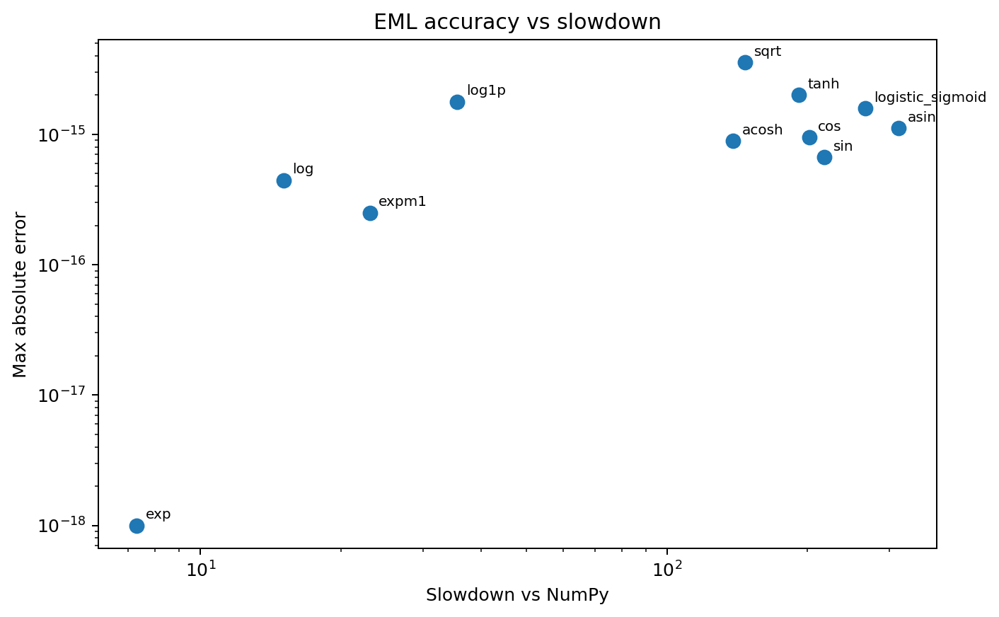
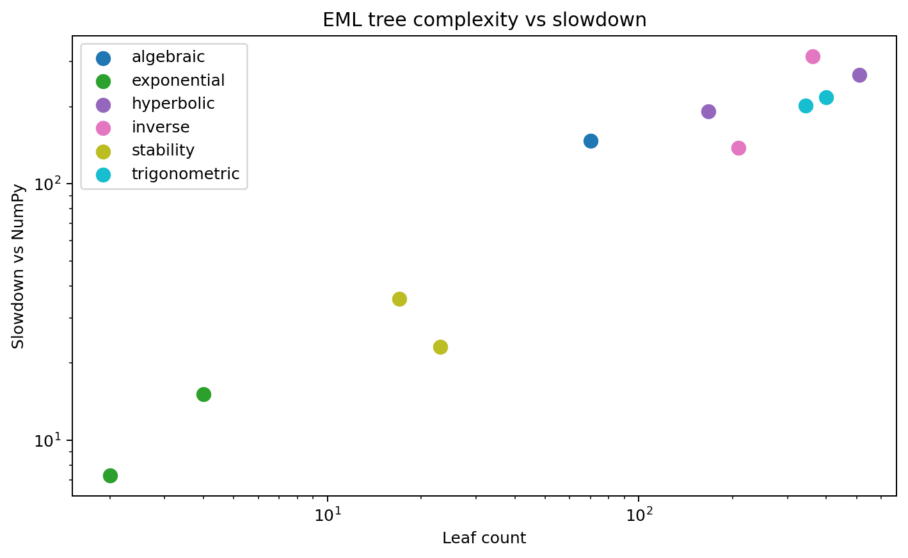
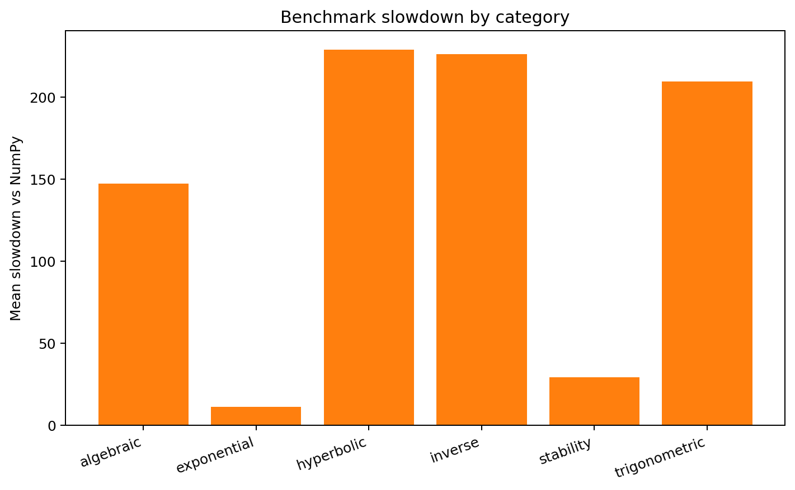
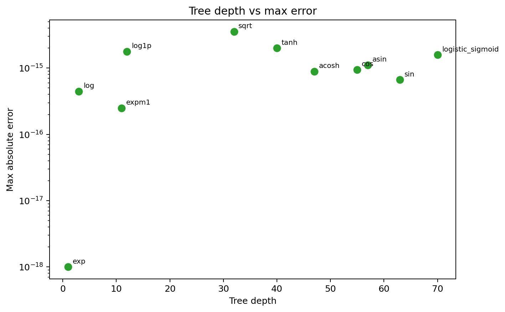

Published Benchmark Bundle
Accuracy, slowdown, and tree complexity in one place.
The plots below were generated from the current docs benchmark bundle with sample_count = 1024 and repeats = 2.
The same commands are available through the public benchmark CLI.
Error vs slowdown

Small exponential trees sit near the lower-left corner; larger trigonometric and inverse constructions drift to the right because they expand into much deeper EML trees.
Complexity vs slowdown

Slowdown is strongly correlated with tree size. That is exactly what a constructive one-operator implementation should make visible.
Category slowdown

Exponential and stability-oriented helpers are relatively cheap. Trigonometric, hyperbolic, and inverse families are more expensive because their EML representations are structurally larger.
Depth vs error

Larger trees do not immediately imply poor accuracy. Even the deeper constructions still track NumPy at roughly machine-precision levels on the sampled domains.
Interpretation
| Observation | Meaning |
|---|---|
| Exponential cases are shallow and fast | The primitive is already exp-minus-log, so these functions sit close to the operator itself. |
| Trigonometric and inverse cases are much deeper | They rely on Euler-style reductions and logarithmic inverse formulas, which create many nested EML nodes. |
| Accuracy remains very strong | The current implementation stays in the machine-precision regime on the sampled real domains despite large trees. |